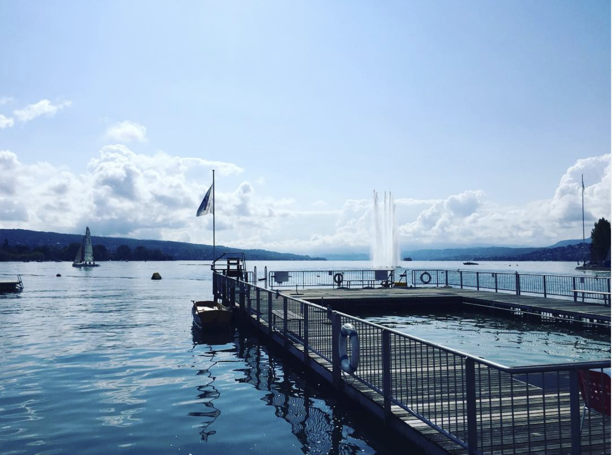
Seebad Enge
Seebad Enge
A visit to the seaside resort of Enge with its unique location on Lake Zurich and its alpine panorama is an experience all year round. Perfect for you all year round depending on the season as a bathing establishment, restaurant or sauna on the lake.

Ginetta Terrace
Ginetta Terrace
Every Thursday when the sun is shining you can find ginetta enjoying there apero on the terrace. In the summer you might even encounter a sprinkler fight.
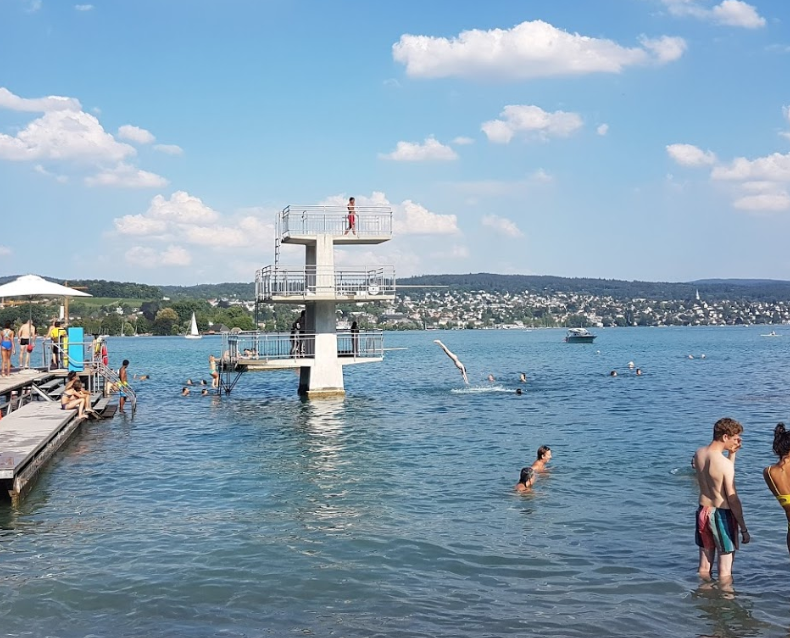
Mythenquai
This lakeside open-air public swimming bath, with its non-swimmer area and water fountains, is particularly suitable for children.
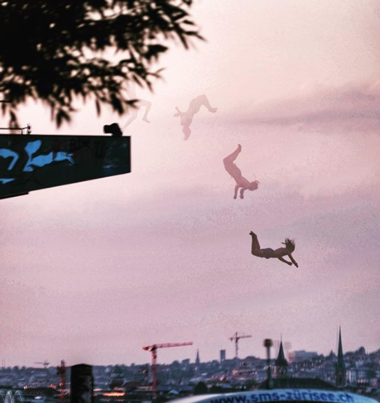
Rotefabrik
Rotefabrik
Rotefabrik has it's options of what to do there, have an apero, watch a concert or hop into the lake from one of their diving boards. It's a beautiful view of the lake and a nice place to dive in if it's too hot for an apero.
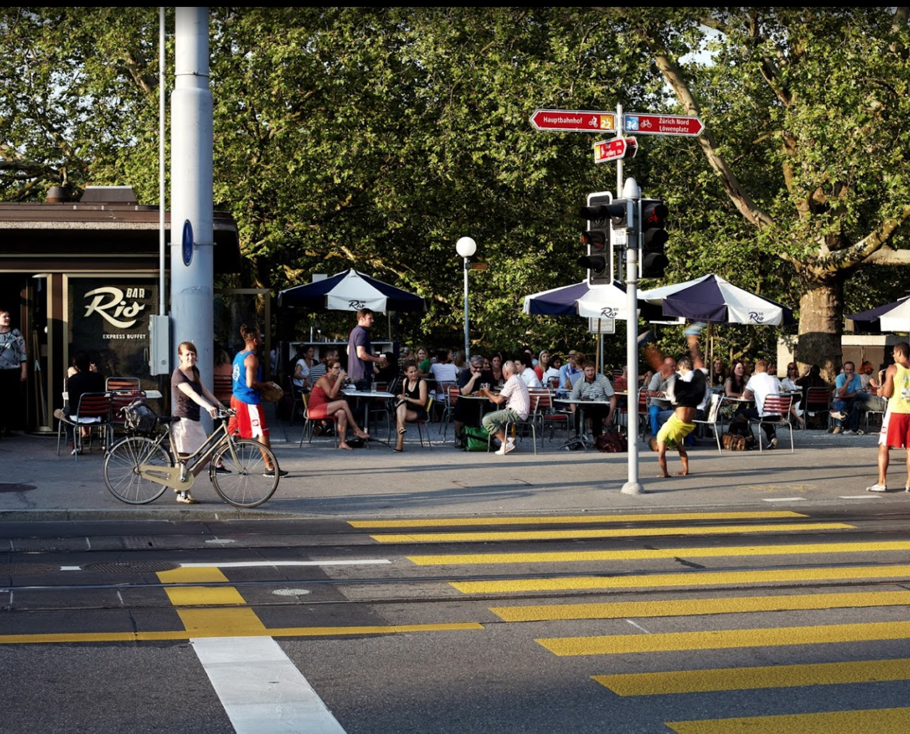
Rio Bar
A unique garden bar right next to Zürich Main Station, surrounded by old trees, a river confluence, and a big intersection.
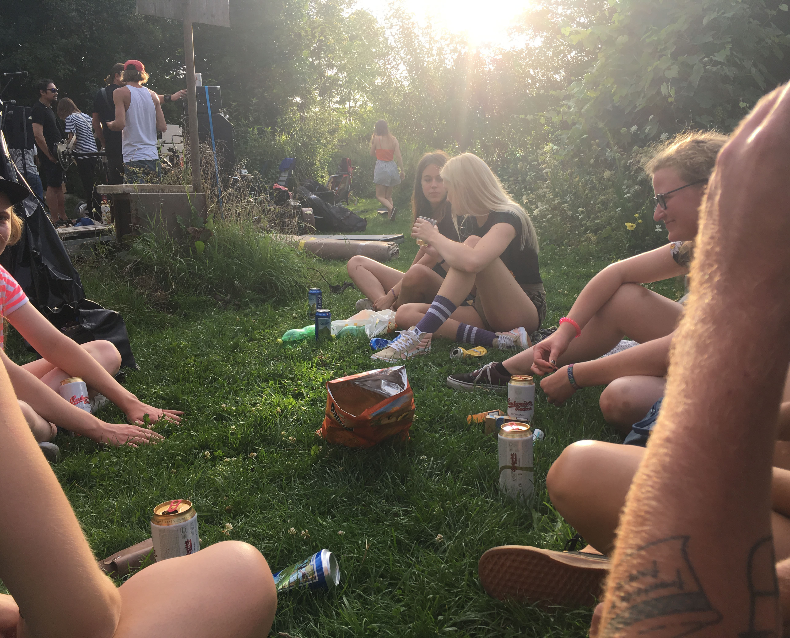
The Beast
The Beast
At Stadionbrache you will find good vibes, it is a verein that has gardens, a stone brick oven, and a DIY skatebowl. Skateboard, grill, hang out, explore the gardens. A little oasis for skaters and freaks alike. Bring your friends to bake a pizza and hang in the garden or kick back and watch the skaters do their thing. It's a beauty.
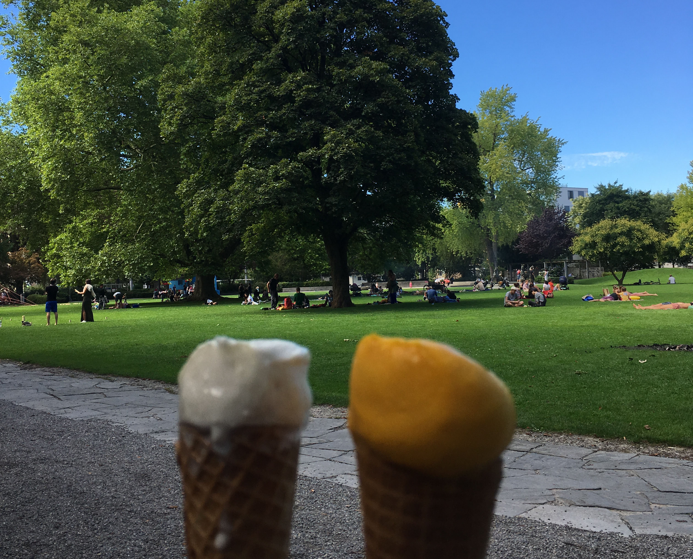
Backerenlage
Backerenlage
The "Bäckeranlage" park is one of the most beautiful green areas in the city of Zurich. Near langstrasse, it's a nice place to relax and everyone once in a while expereience open air concerts, it is a recreational paradise.
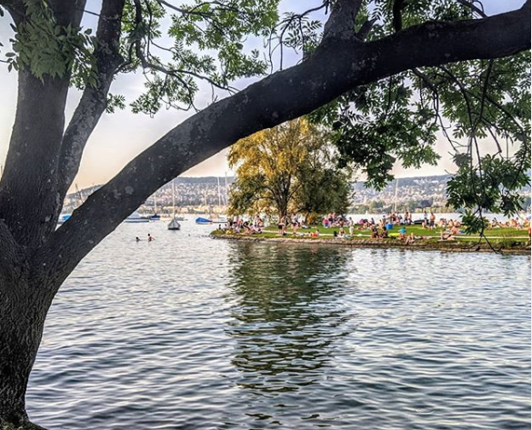
Saffa Insel
Saffa Insel
Over at wollishofen you can cross the little bridge and relax on the Saffa Insel. There is plenty of choices to find your perfect sunbathing area or perch under a large tree for shade.

Frischer Fritz
Frischer Fritz
Relax at Fischers Fritz, directly on Lake Zurich, while tucking into some tasty “Fischchnusperli”. They have a mix of it all: Restaurant, beach, camping, beach sports, shop and fishery.
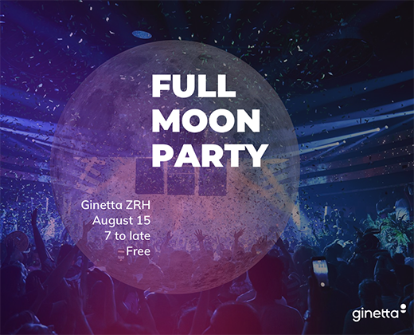
Full Moon Party
Here at Ginetta we are cleebrating together the full moon becuase why not. We will enjoy drinks, our coworkers, and friends.
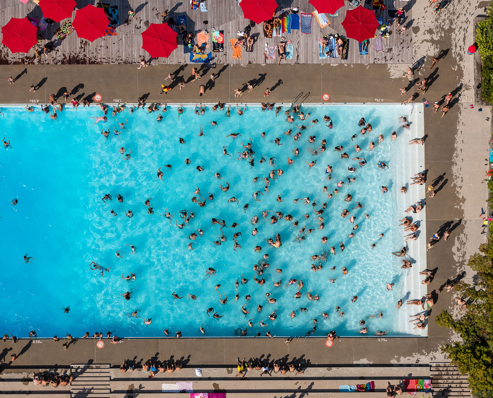
Letzibad
Enjoy three different swimming pools one for divers, one for swimming laps, and another for the little ones.
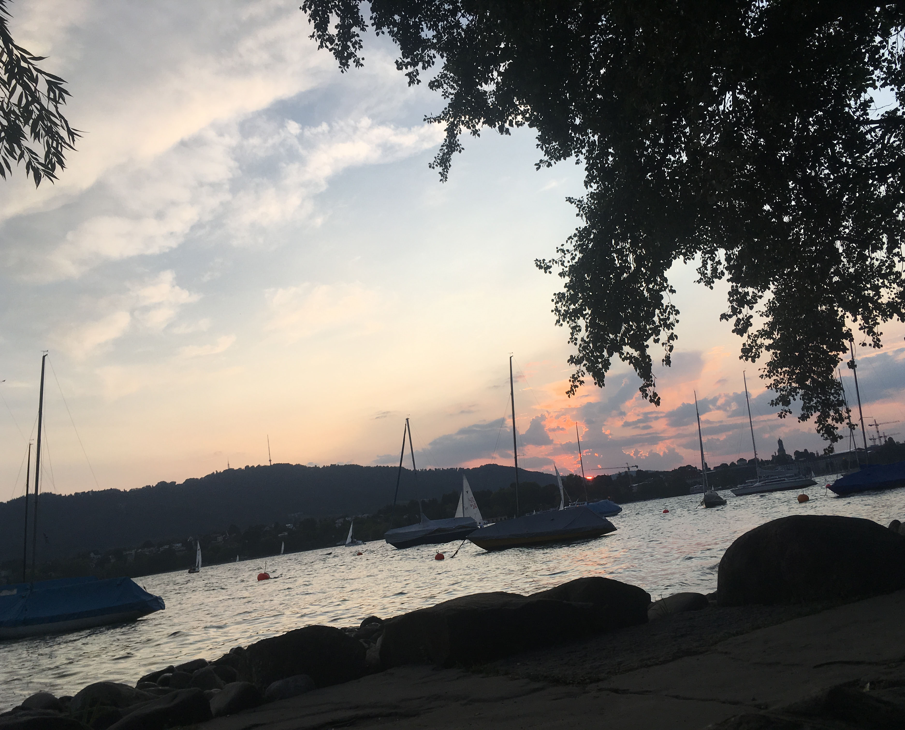
China Garden
Chinawiese "China Garden"
It is a great place to get into the lake from the golden coast. There is plenty of spots along the lake shore or enjoy the large 'wiese' and lay in the grass. There is a picking of spots if your looking to hide under the shade. And plenty of BBQ's and music around to hear.
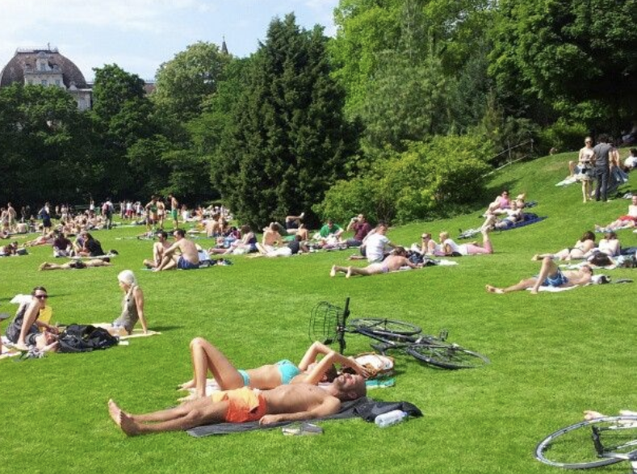
Rentenwiese
A popular spot to go lay in the sun and hide under some shade. There is a little stony beach that gives easy access to slowly enter the lake.
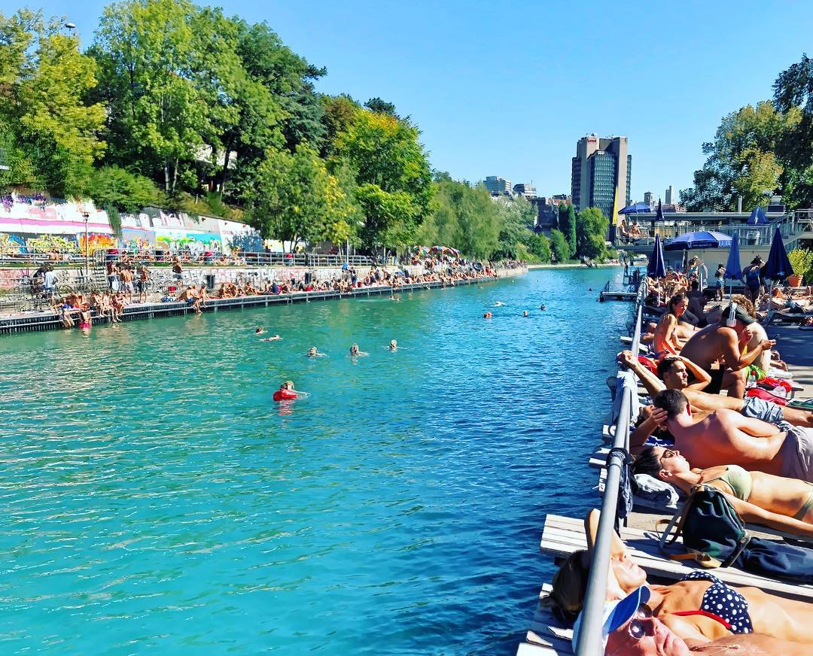
Oberer Letten
Oberer Letten
Super close to the main station is the Oberer Letten swimming area. It's a popular meeting place and a good spot to hop in at the top of the river if you want to float down for a stretch. There are sun terrraces and a bar nearby.
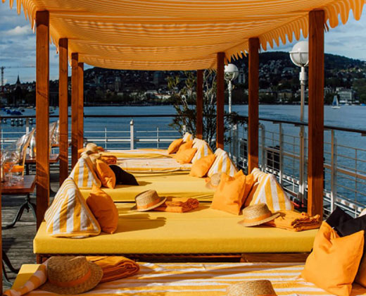
Samigo
Samigo
Looking to fuel your senses and a place to enjoy a drink but with a spice. At Samigo you can expect a unique experience of drag-queens,fire-eaters, burlesque dancers and international food and drinks.
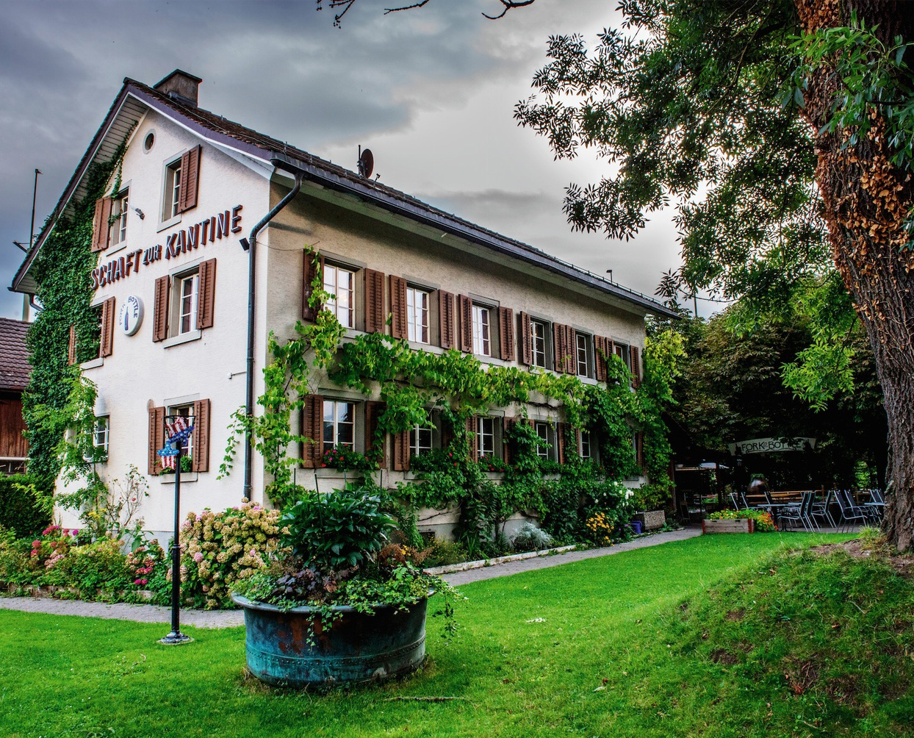
Fork & Bottle
Fork & Bottle
Known for being Zurich's only farm-to-table restaurant offering an ever-changing menu of craft beer, Fork & Bottle invites you in to enjoy great food and drink in a relaxed country setting.
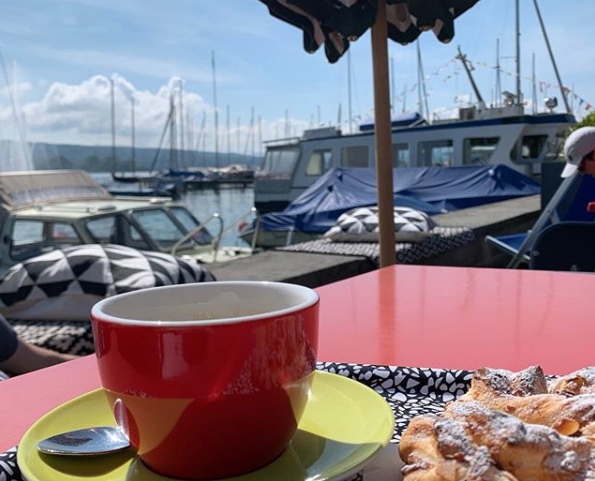
Hafen Enge Kiosk
A nice place at the lake to have a morning coffee with a view or an evening apero.

SonnenBerg
Sonnenberg
A nice place to go watch the sunset and escape the city. There is a restaurant too to have dinner or a drink.
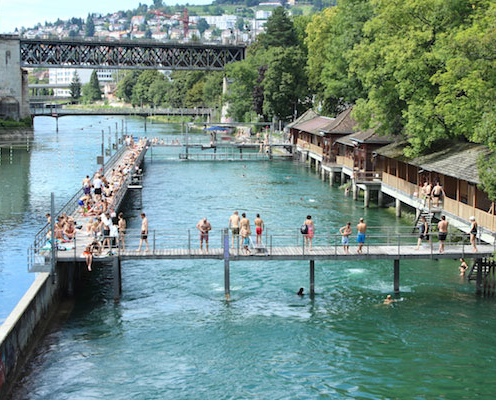
Unterer Letten
Unterer Letten
Jump into the river and float away with the current. This is a popular gathering for Zurich locals. If it get's too crowded you can find a little river nook along the way.

Limmat Nook
Hardturmsteg Bridge
One of those perfect Limmat river nooks. Looking for somewhere away from the crowd to just sit in the river, this is a good option. This rocky island is great to sit in the water without floating away
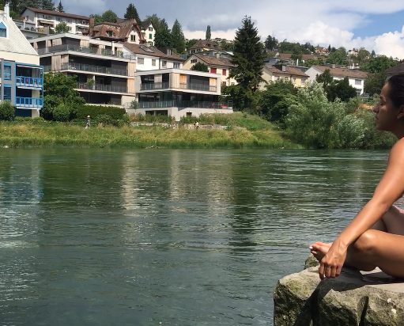
Limmat Rocks
Limmat Nook before Werd Insel
If your floating down the Limmat or searching for somewhere to dip in. This spot on the limmat is nice to rest and meditate on the rocks, or hop in a little bit earlier and swim to the rocks.
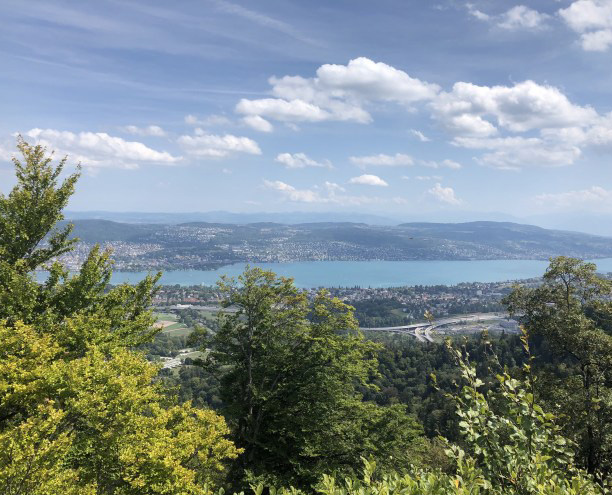
Dolder Forest Walk
Dolder Forest Walk
Take the tram to Dolder and walk in the forest late in the evening, best in winters, and enjoy a fondue at restaurant Degenried.
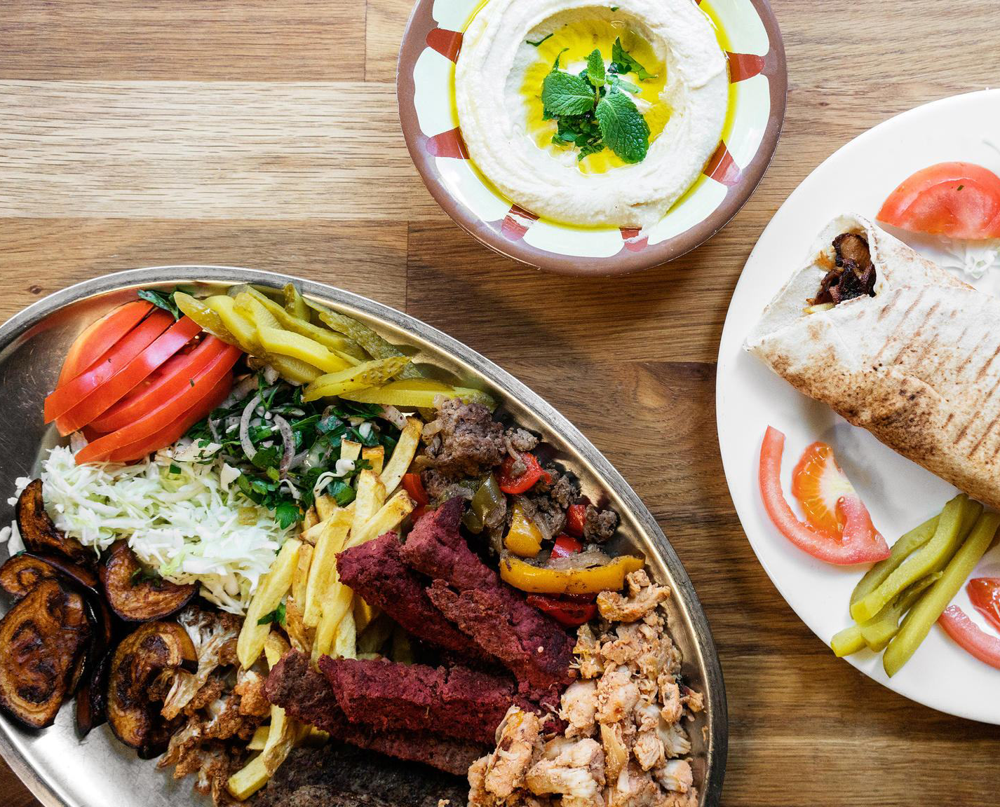
Grüne Lebanon
A decent price and real authentic and distinctive Lebanonese food. Near the main station a good place to go when looking for a good quick meal.

Werd Insel
Werd Insel
Another island is zurich but along the river. It's also the perfect spot to start your river float down the letten with a 'gummi boot' and float all the way down to Dietikon.
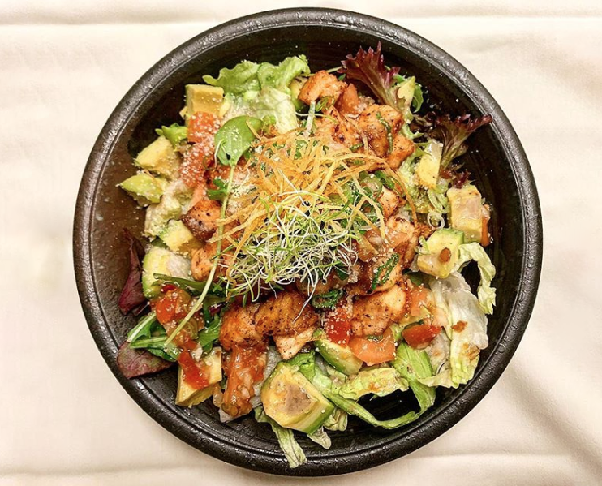
Kokoro
My favorite Japanese restaurant. - Simon K

The Bite
The Bite
"Best burgers in town"
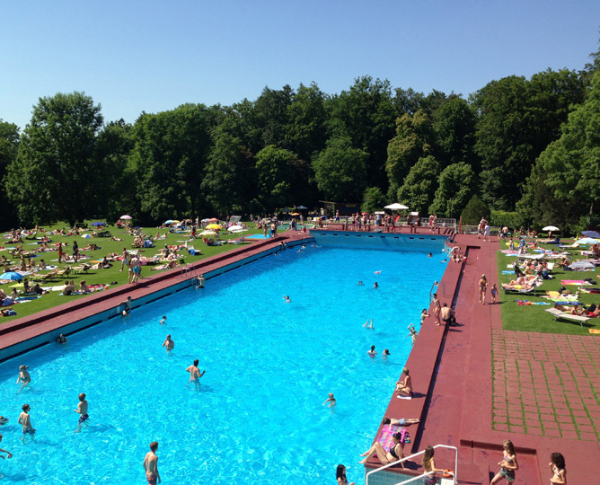
Dolder Bad
Dolder Bad
Dolder Bad is situated high on the Adlisberg in idyllic natural surroundings. In addition to the outdoor pool, there is a tree-lined lawn with areas for sport and sunbathing, a children’s play area, two paddling pools and a sandpit, as well as four table tennis tables and a volleyball pitch.
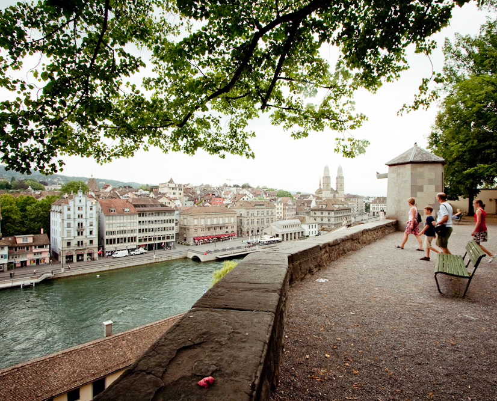
Lindenhof
Lindenhof
A nice place to get a good view of the old town. A good place for dates or to take visitors. "‘Especially magical on a sunny Autumn day when you can walk across a carpet of crisp leaves under bright amber trees!’ - Louise
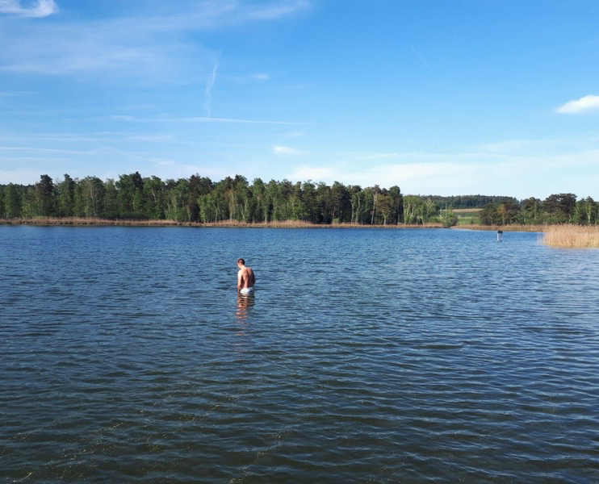
Katzensee
Katzensee
A nice place to go escape the Zurichsee crowd. Also nice to lounge at different parts of the lake and not their designated Badi. You can also take a hike around the lake and have beautiful views along the way!
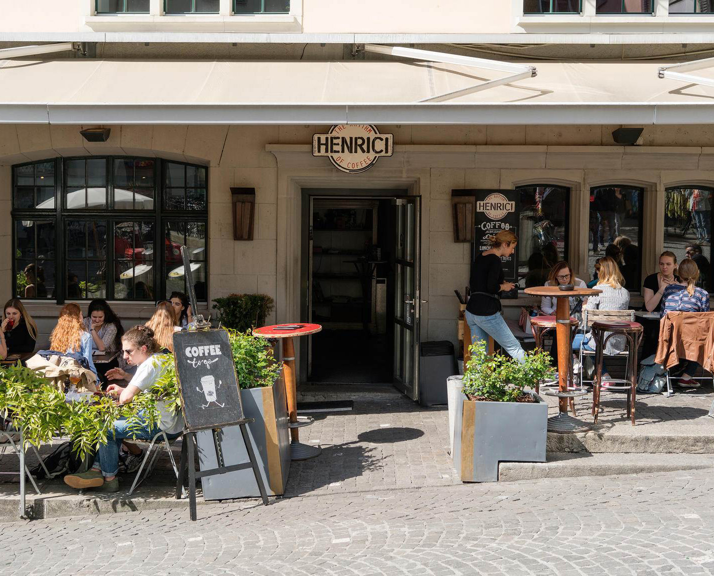
Henrici
Drinking coffee is a true experience at Heinrici, where there is everything from classic coffees to creative coffee cocktails to choose from.
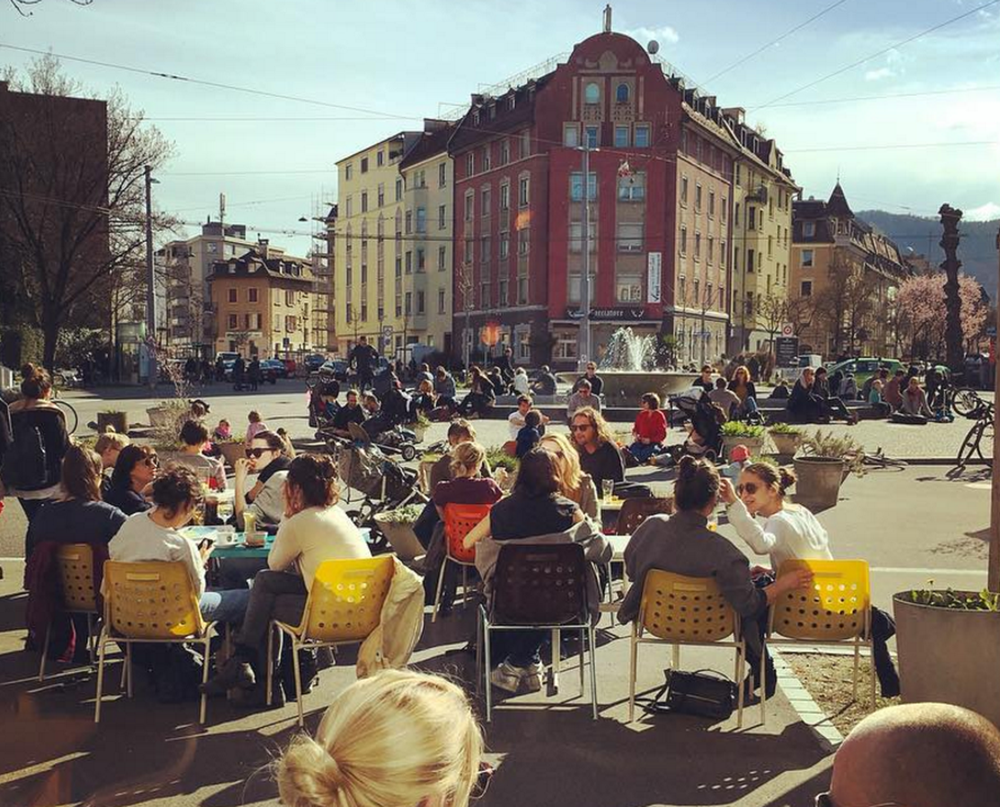
Bullingerplatz
Bullingerplatz
A great spot nooked into the city and the neighborhood. Enjoy sitting around the fountain at Bullingerplatz. Or at the Cafe Bonhuer

Utoquai Bad
Utoquai Bad
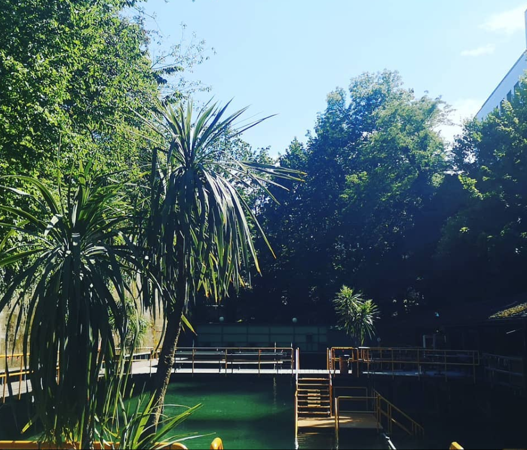
Rimini Bar
Rimini Bar
Nested away along the Sihl you'll find Rimini Bar. And it's a great place to enjoy a cocktail and some refreshments.
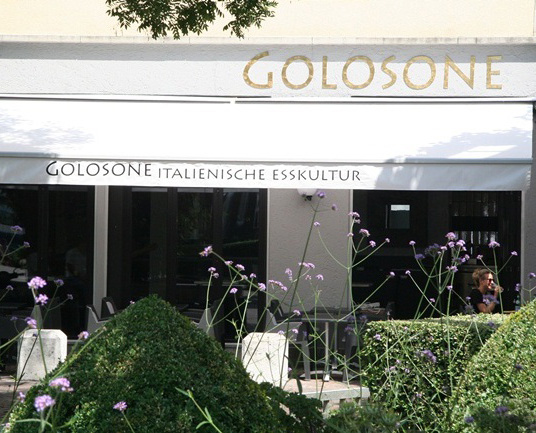
Golosone
Golosone
A nice italian restaurant in the city center. Tasty dishes and big portions makes it the perfect place to go with friends. Great location and good food.
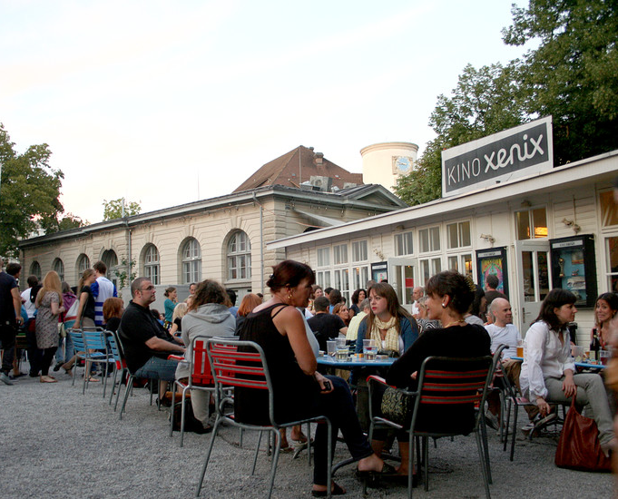
Kino Xenix
Kino Xenix
A nice place to go for a drink and to hangout with friends, there is also a park and sometimes live music. And if it's a rainy day it's also the place to go to watch an art-house movie.
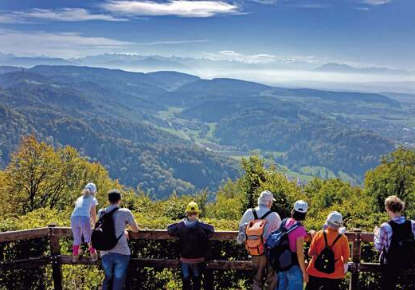

Panoramaweg
Panoramaweg
The perfect place to get the top views of Zurich a nice trail that is just the hike you need on an evening. Enjoy a picinic at the top, or escpae the cloudy evening in spring and fall and get above the clouds.
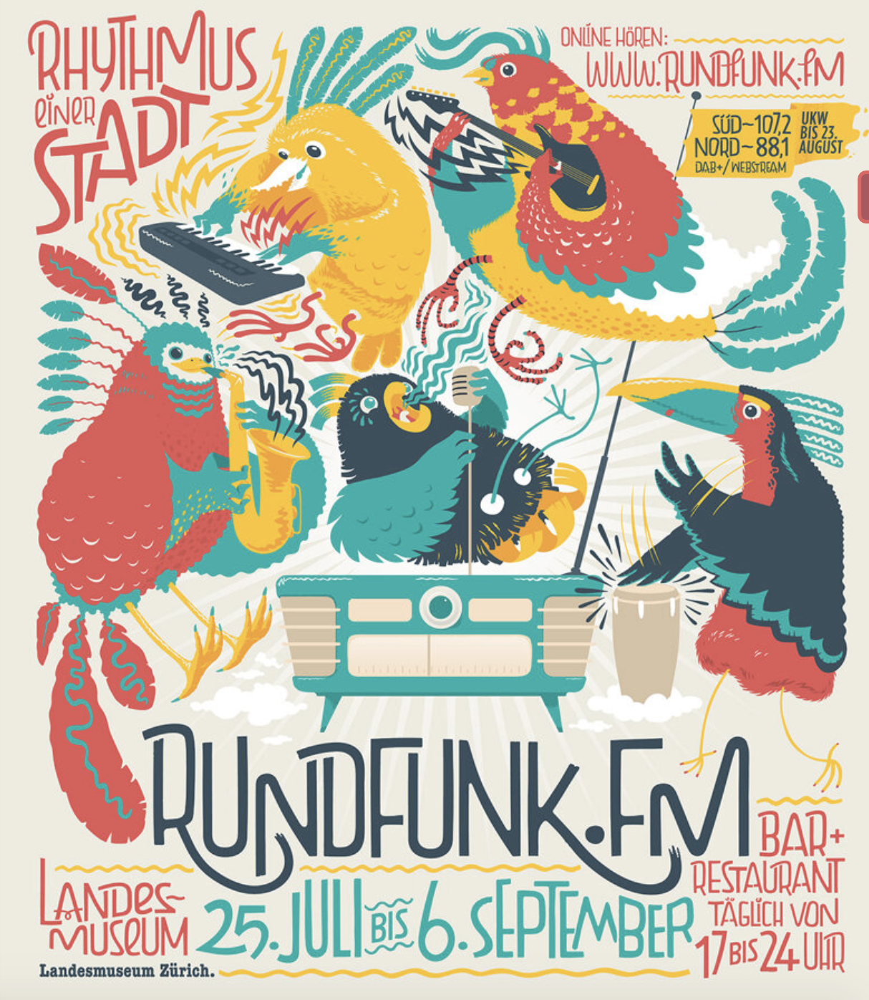
Rundfunk
Hosted by the radio station Rundfunk.fm they are celebrating music and having live sessions through out the day at Landesmuseum. Enjoy food trucks, drinks, and live music.
From Jul 25 - Sept 6
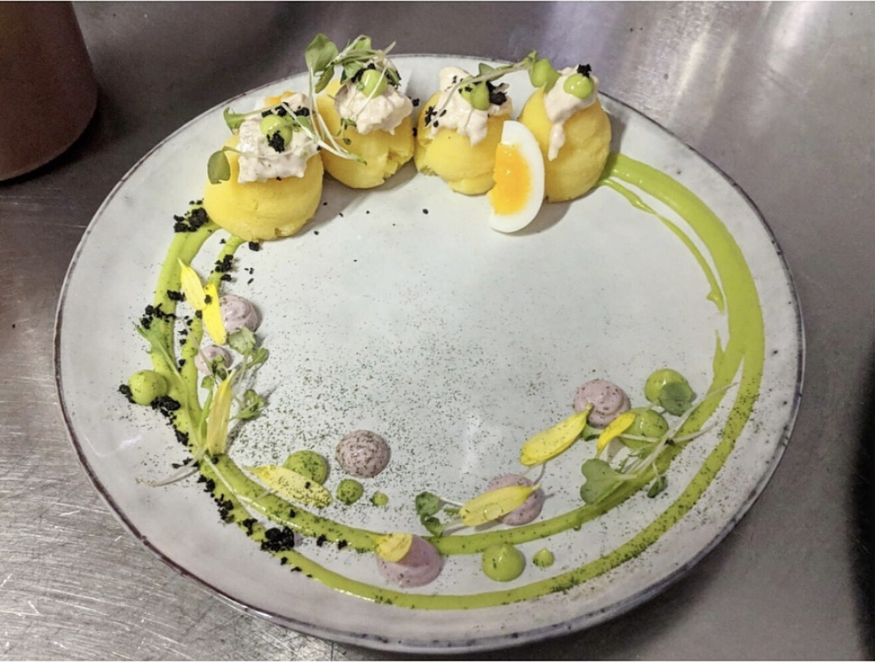
Barranco
Barranco
Barranco is a Peruvian restaurant and pisco bar, inspired by the bold flavors of Lima and the street-food scene in its famous artists’ district Barranco.
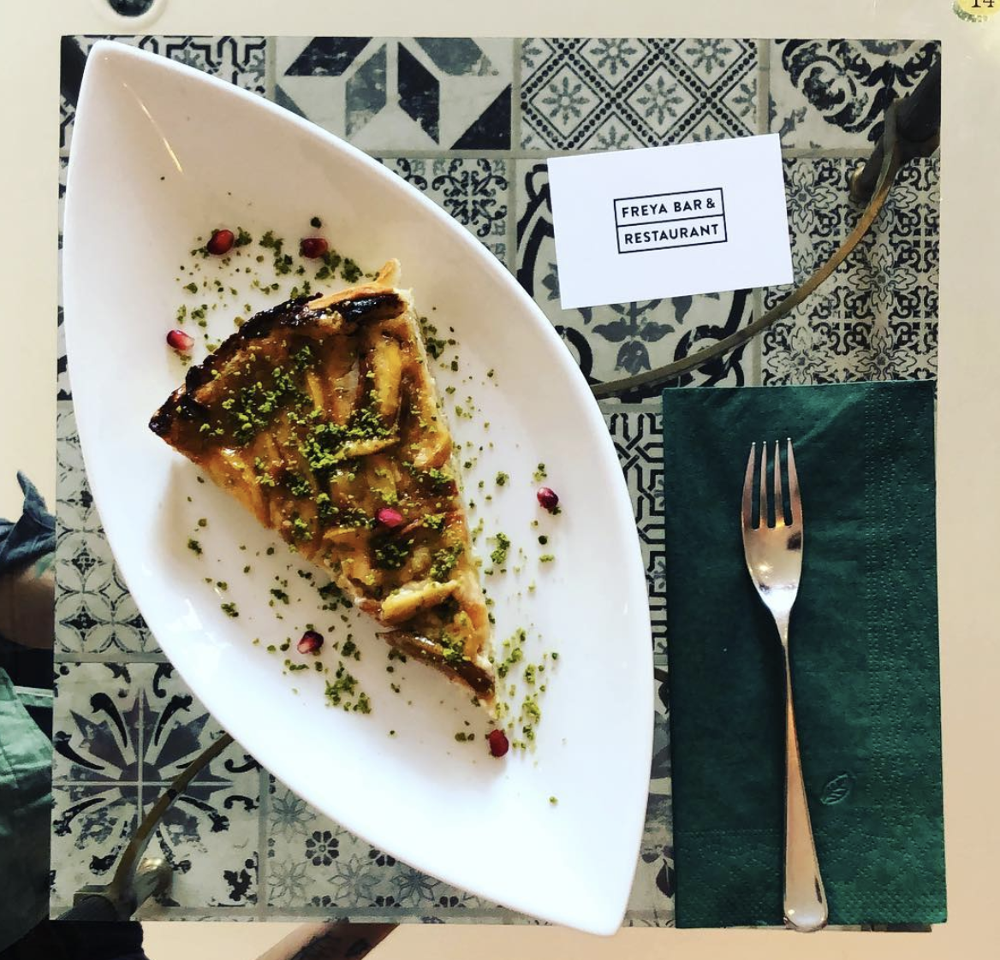
Freya
Freya
Come for an aperitif or stay for dinner! Enjoy your evening at FREYA with homemade mezze specialties and treat yourself to a nice glass of wine. - Or do you want to sip cocktails and vegetarian delicacies through a balmy summer evening?
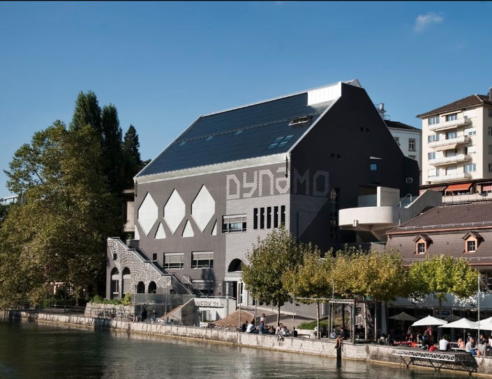
UX Meetups
UX Meetups
Join our meetup group UX Wizards and meet with us at the UX happy hour every first Wednesday of the month. It's informal and open to anyone. Developers, designers, UX researchers, PMs or founders – are all welcome! No talks or workshops, just us hanging out.